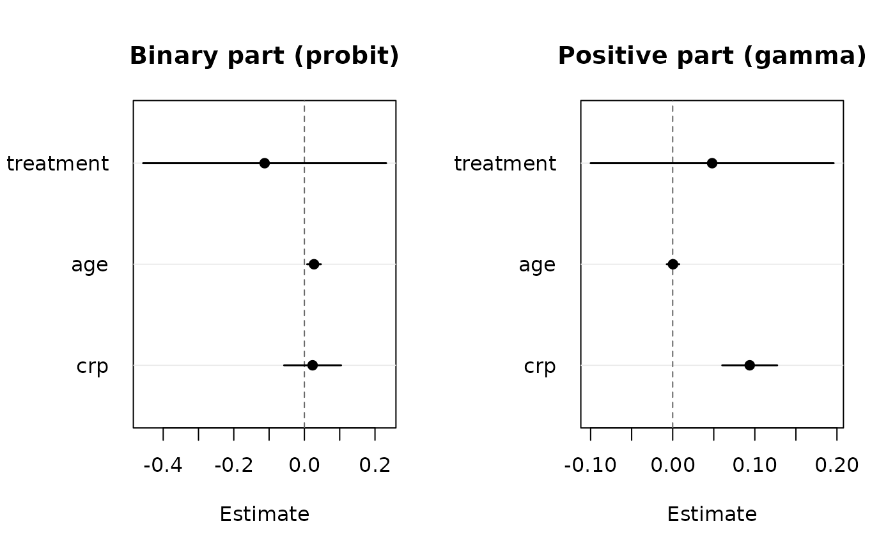
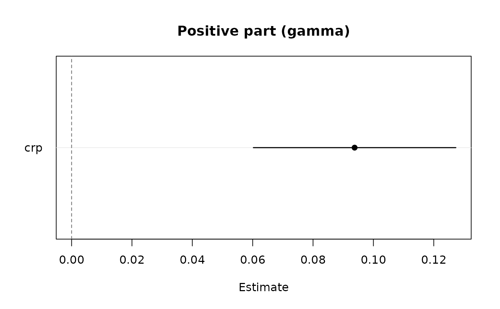
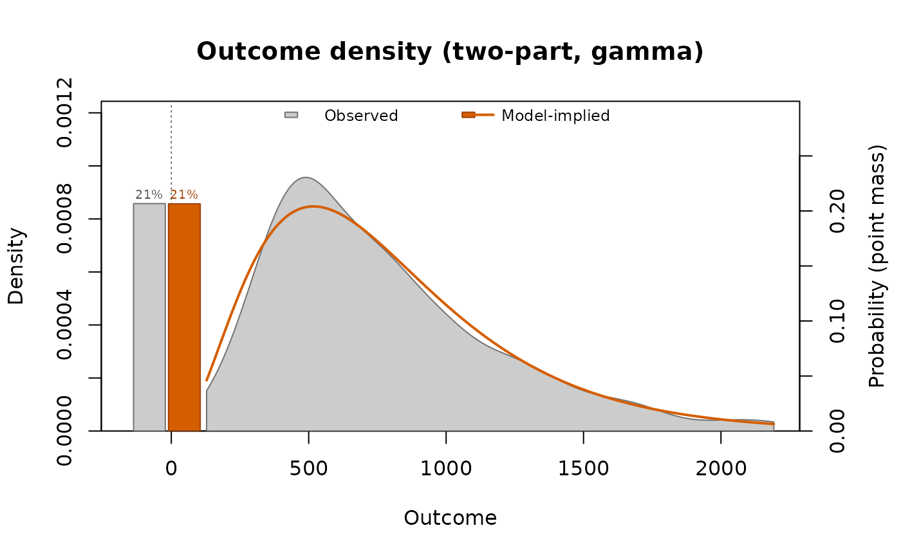
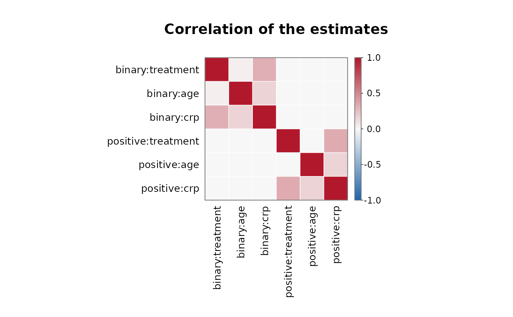

Coefficient estimates with Wald confidence intervals of the binary part
(probability of a positive outcome), of the positive part, or of both
side by side, in the dot-and-whisker layout of plot.panglm(). The
intervals use vcov(), so that they are the joint-likelihood intervals of
correlated two-part fits.
Arguments
- x
a fitted
"twopart"object- which
"both"(default),"binary","positive","density"or"correlation"- parm
names or positions of the terms to plot; by default every term except
"(Intercept)". Withwhich = "both", names absent from one part are ignored in that part. For"correlation", names as incoef(x)(with thebinary:andpositive:prefixes).- level
confidence level of the intervals
- bw
bandwidth of the observed kernel density of the
"density"view, passed tostats::density()- cells
for
"correlation", print the correlation in each cell- ...
additional arguments passed to
graphics::plot.default()
Details
which = "density" compares the observed outcome with the
distribution implied by the model, a point mass at zero plus a density
on the positive values. The bars at zero are the observed share of zeros
(grey) and the predicted probability mean_i (1 - p_i) (orange, on the
right-hand axis); the curves are the kernel density of the positive
outcomes (stats::density(), bandwidth bw) scaled by their share
(grey) and the implied density mean_i p_i g_i(t) (orange), where p_i
is the probability of a positive outcome and g_i the gamma density
(shape 1 / phi, phi the Pearson dispersion of the positive part) or
the lognormal density (sigma^2 the residual variance of log y).
Random-effects fits integrate over the random intercepts: independent
intercepts by Gauss-Hermite quadrature (closed form for the lognormal
part), correlated intercepts over their joint normal distribution.
Skewed costs are drawn on a logarithmic axis (densities of log(y), the
bars at zero left of the axis) unless log = "" is passed.
which = "correlation" draws the heatmap of the correlation matrix of
the estimates of both parts, cov2cor(vcov(x)) (see plot.panglm()).
See also
Other twopart methods:
confint.twopart(),
predict.twopart()
Examples
data(copd)
set.seed(1)
copd$cost <- ifelse(copd$exacerbations > 0,
exp(6 + 0.1 * copd$crp + rnorm(nrow(copd), 0, 0.5)), 0)
tp <- twopart(cost ~ treatment + age + crp, data = copd,
index = c("id", "visit"), positive = "gamma")
plot(tp)

plot(tp, which = "positive", parm = "crp")

plot(tp, which = "density")

plot(tp, which = "correlation")
